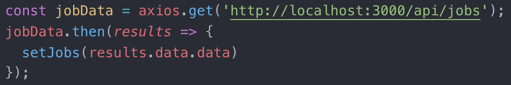
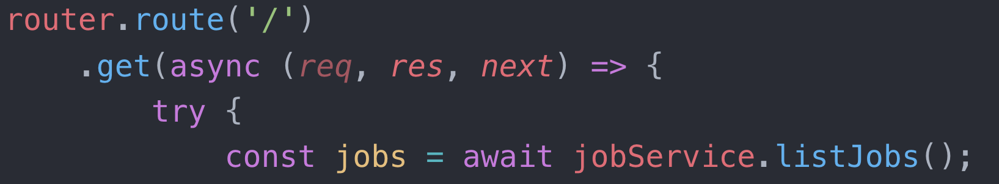
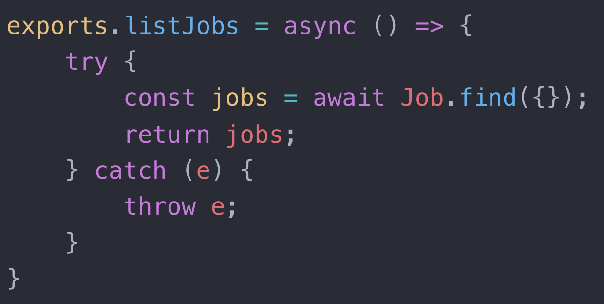
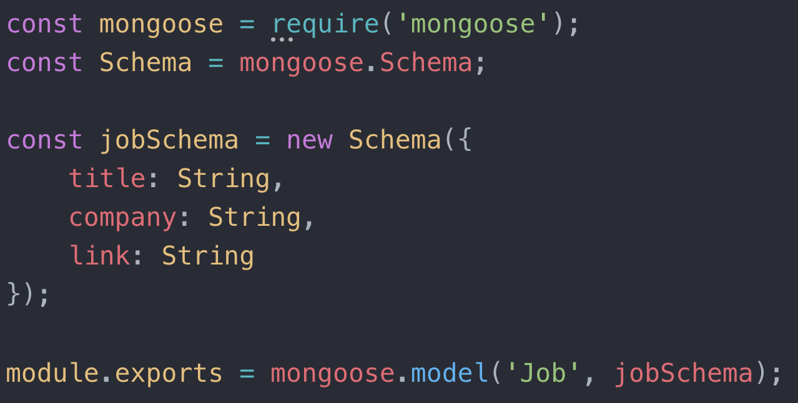
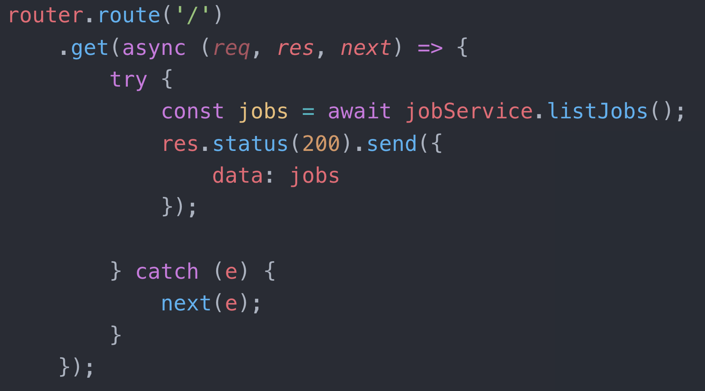

Welcome to Mark: My Words
We are going to learn about making our very own APIs
Our goal is to learn about building an API that is similar to the APIs that you have been using, and have come to know and love.
We will do this through a code-along creation of JAWBER.
Tools
NodeJS
Node allows us to run JavaScript on the server. Node allows us to run our API, communicate with our database, and complete build related tasks.
MongoDB
This is a popular and great choice for your database since data is organized into JSON documents, which interacts nicely with our full JavaScript stack.
Mongoose
Mongoose is utilized for our connection between Node and MongoDB. Known as an Object Data Modelling Library (ODM). In addition, within our server file, mongoose is used to establish the connection to our database. It includes built-in type casting, validation, query building, business logic hooks, and more, out of the box.
Express
This allows us to simplify our routing, and provides immensely helpful methods to keep our HTTP requests simplified and clean.
Getting Started
I like to visualize how everything works by going through the whole flow of information from the front end to the back end and then bringing it back again.

Front - Jobs.js

Back - jobRoutes.js
Back - jobService.js
Back - jobModel.js

Back - jobRoutes.js

Front - Jobs.js
Routes vs. Middleware
Routes
This will hold the information specifying what happens when the endpoints of our API are hit.
Node without Express


Middleware
Middleware are functions that have access to the request object (req), response object (res), and the next function. Middleware functions can execute any code, make changes to request and response objects, end the request-response cycle, and call the next middleware in the stack.


Routes: Models and Services
Models
This is where we set up our schema. This maps to the way our information is stored in our database.


Services
This will contain helper functions that we can use within our routes to perform important actions and reduce code repetition.

Server.js
This is like the package.json file of the backend
This serves as the entry point for our API. Within here, we will set up configurations, link the various segments of our API, and start the server and connection to our database.
Back - server.js

Sample folder structure of API

Databases
Thinking about database structure and how our collections relate will help us structure our code!
For example, a party venue can have multiple attendees, but each attendee is only at one venue at any given time.
Database Relationships
It's important to understand how different collections relate to one another, even if the proper terminology isn't used to describe these relationships.
Venue collection

Animal collection

Contact me for questions!
- Email: mark@hackeryou.com
- Twitter: @mgoldber
- LinkedIn: Mark Goldberg
- Instagram: @markdgoldberg